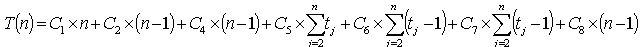
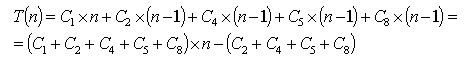
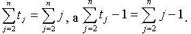
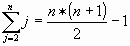
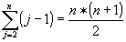
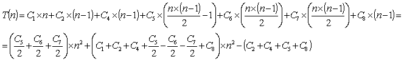
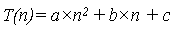
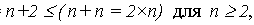
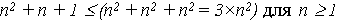

|
|
|||||||||||||||||||||||||||||||||||||
|
Классификация алгоритмов по трудоемкости
Основными критериями при выборе представления структур и алгоритмов являются адекватность структуры конкретной задаче, объем памяти, требующийся для её представления, и временная эффективность. При этом приходится учитывать множество факторов – внутреннюю архитектуру компьютера, объем памяти для размещения данных и методы управления ею, сложность алгоритмов. Как правило, это необходимо делать на ранних стадиях проектирования программы при выборе структуры и алгоритма. В связи с этим очень важную роль играет анализ вычислительной сложности алгоритма. Для структур данных применяется методика оценки эффективности алгоритмов в терминах размера структуры, т. е. количества элементов в ней. Преимущество этого метода заключается в том, что здесь нет необходимости учитывать архитектурные особенности конкретной вычислительной машины. Метод дает абстрактные характеристики эффективности алгоритмов. Критерии эффективностиВ конечном счете алгоритм выполняется на вычислительной системе со специфическим набором команд и периферийными устройствами. Алгоритм может быть разработан для отдельной системы для полного использования её преимуществ. Критерий, называемый системной эффективностью , сравнивает скорость выполнения двух или более алгоритмов задачи, выполняя алгоритмы задачи с одними и теми же наборами данных. Можно определить относительное время, используя системные часы. Оценка этого времени становится мерой системной эффективности для каждого из алгоритмов. При работе с некоторыми алгоритмами могут стать проблемой ограничения памяти. Может потребоваться большой объем памяти для временного хранения, ограничивающий размер набора данных, или дисковая подкачка данных. Эффективность пространства – это мера относительного количества внутренней памяти, используемой алгоритмом. Эта мера может указать тип компьютера, который может выполнять алгоритм, и полную системную эффективность. Вследствие увеличения памяти в новых системах, анализ пространственной эффективности становится менее важным. Третий критерий рассматривает внутреннюю структуру алгоритма, анализируя его работу, количество операций в алгоритме. Эти измерения не зависят от вычислительной системы. Критерий измеряет вычислительную сложность алгоритма относительно n - количества элементов в структуре. Этот критерий называется вычислительной эффективностью и выражается через нотацию O(n) - Big-O. Рассмотрим определение нотации Big-O для алгоритма сортировки вставками [3]. Время сортировки вставками зависит от размера сортируемого массива и от исходной упорядоченности массива. Размер входных данных алгоритма может задаваться либо числом элементов в структуре или массиве, числом битов , иногда несколькими числами (числом вершин и числом ребер в графе). Время работы алгоритма определяется числом шагов, которые он выполняет. Будем считать, что одна строка псевдокода, требует не более, чем фиксированного числа элементарных операций, если строка не является формулировкой каких-либо сложных действий. При анализе алгоритма сортировки вставками - Insertion-Sort около каждой строки будем отличать ее стоимость – число операций и число раз, которое эта строка выполняется.
|
|||||||||||||||||||||||||||||||||||||
|
Для
каждого j от 2 до n обозначим, сколько раз
будет исполнена строка 5 - tj. . Строка стоимостью С,
повторенная в алгоритме m раз, вносит вклад в общее время
выполнения алгоритма - c Сложив вклады всех строк, получим:  Стоимость зависит не только от объема данных - n, но и от их упорядоченности. Наиболее благоприятный случай, когда массив уже отсортирован по возрастанию. Тогда цикл в строке 5 завершается после первой же проверки, т. к. A[i] < Key при i = j -1 и tj = 1. Тогда общее время есть:  Таким образом,
T(n) –
линейная функция имеет вид: T(n) =
a Если же массив расположен в обратном убывающем порядке, время работы функции будет максимальным: каждый элемент A[j] придется сравнивать со всеми элементами A[1],...,A[j-1].
При этом tj = j.
и  Поскольку
   Теперь
функция T(n) – квадратичная и имеет вид:
 Константы a, b, c определяются значениями С1,...,С8. Время работы в худшем случае Итак, время работы в худшем и лучшем случаях могут сильно отличаться. Большей частью нас интересует время работы в худшем случае по нескольким причинам:
В некоторых случаях интересно также среднее время работы алгоритма. Эта величина зависит от распределения вероятностей и распределения входных данных и может отличаться от предполагаемого, равномерного распределения . Иногда можно достигнуть равномерности, используя датчик случайных чисел. Порядок ростаВывод T(n) основан на нескольких упрощающих предположениях. Сначала предположим, что время выполнения j - й строки постоянно и равно Ci. Затем огрубим оценку до an2+bn+c. Если пойти дальше и в худшем случае определить порядок роста n2, отбрасывая члены меньшего порядка и коэффициент при n2, то получим T(n)= O (n2) . Алгоритм с меньшим порядком роста предпочтительнее. Если один алгоритм имеет порядок O (n3) , а другой - O (n2) , то можно сделать вывод, что второй алгоритм эффективнее. Сравнивая алгоритмы путем анализа T(n), не обязательно искать точное количество выполняемых действий. Достаточно оценить асимптотику роста времени алгоритма при стремлении n к бесконечности. Если у одного алгоритма она меньше, чем у другого, то в большинстве случаев он будет эффективнее. Порядок роста определяет зависимость времени выполнения от размера структуры n. Традиционно значение аппроксимирующей функции для порядка роста выбирается среди небольшого набора полиномиальных, логарифмических и экспоненциальных функций. Для классических структур эти функции дают наилучшие оценки вычислительной сложности алгоритма. При выполнении аппроксимации T(n) используется понятие доминирующего терма. Например, для функции T(n)=n+2 терм n доминирующий и функция T(n) огрубляется за счет отбрасывания не доминирующих термов. Например, для функции T(n)=n+2 терм n - доминирующий и функция T(n) огрубляется за счет отбрасывания не доминирующих термов: T(n) =  Следовательно, T(n) = O(n ) = 2(n ). Для функции T(n) = n2 + n +1: T(n) = 
Классификация алгоритмов по эффективности
Итак, при выборе структуры представления данных и алгоритмов обработки необходимо на ранней стадии проектирования программы оценить вычислительную сложность с помощью нотации Big – O. Это позволяет либо подтвердить обоснованность выбора структуры и алгоритма либо отказаться от принятого решения без тяжёлых последствий. Если оценка показывает неприемлемость сделанного выбора, нужно подобрать или иной алгоритм или иную структуру данных, дающих более эффективное решение. |
|||||||||||||||||||||||||||||||||||||
|
|
|
||||||||||||||||||||||||||||||||||||
|
|
|||||||||||||||||||||||||||||||||||||